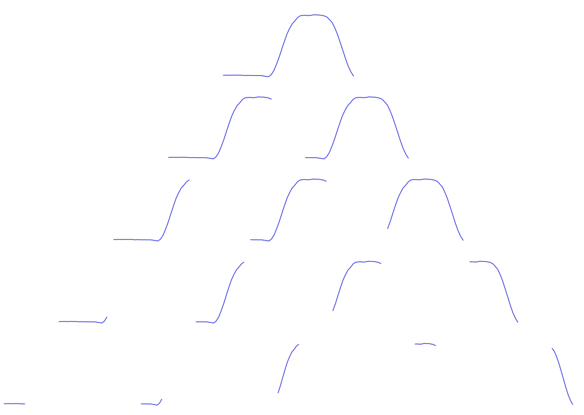
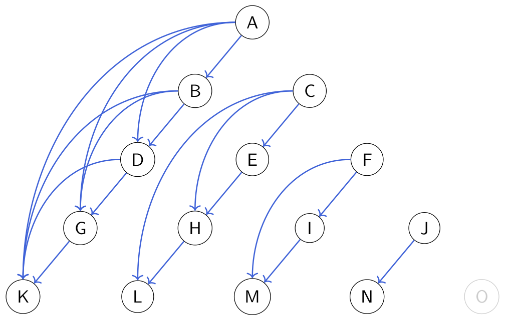
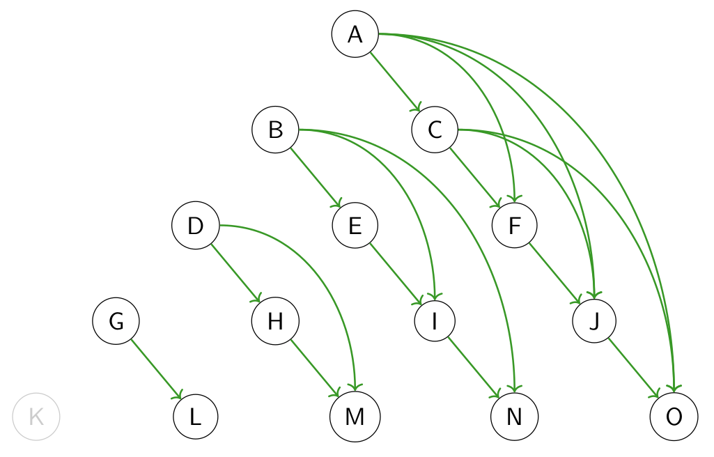
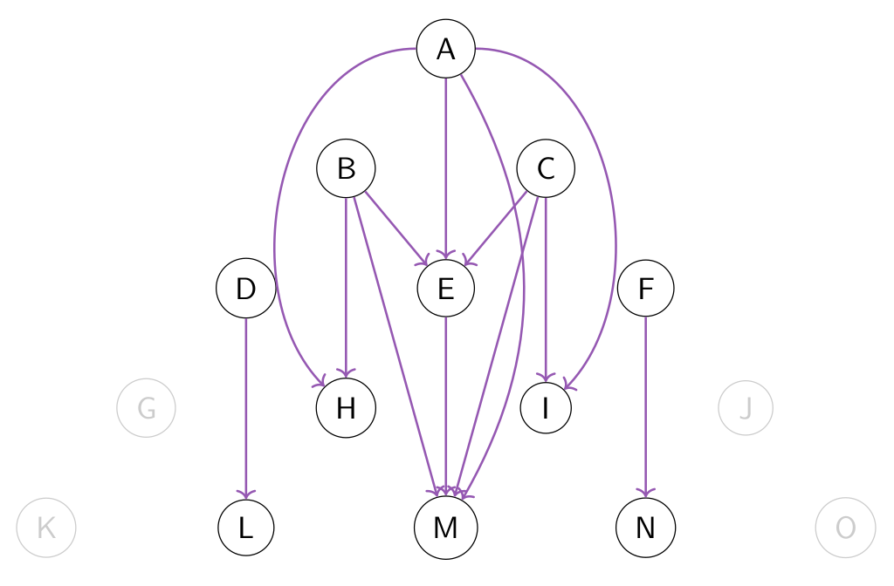
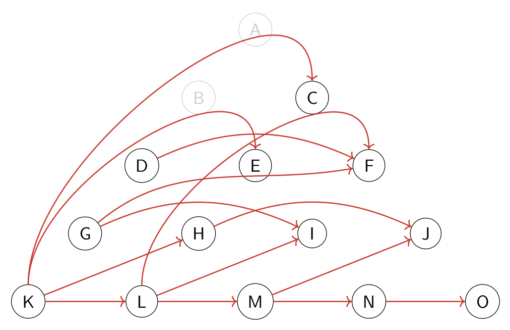

Association rule mining with modal logic
Symbolic modal learning is a branch of machine learning which deals with training classical symbolic machine learning models (e.g., list and set of rules, decision trees, random forests, association rules, etc.) but substituting propositional logic with a more expressive logical formalism (yet, computationally more affordable than first order logic), that is, a specific kind of modal logic.
In the context of this package, modal logic helps us highlight complex relations hidden in data, especially in unstructured data, consisting of graph-like relational data, time series, spatial databases, text, etc. For more information about the modal symbolic learning, we suggest reading the main page of Sole.jl framework and SoleLogics.jl.
The idea is to discretize complex data into relational objects called Kripke models, each of which consists of many propositional models called worlds, and expliciting the relations between worlds. In this way, it is possible to mine complex Itemset, including a certain subset of Item that are true on a target world, but also modally enhanced items that are true on related worlds.
A picture is worth a thousand words. Here you are a slightly more complex example, with respect to the one at the top of Getting started section. We consider this monovariate time series:

We want to encode a graph-like structure from the data above. We could think of various strategies, one of which is to consider every contiguous subsequence in the time series and model it as a set of intervals.

At this point, we can see every resulting blue signal as a propositional model, on which items may be evaluated as true or false. In the modal logic jargon, this is exactly a Kripke model.

After fixing a set of suitable relations, we express them with arcs in the structure. Without defining them, we graphically present some possible relations between intervals. The one below is the begins relation.

Conversely, this one is the ends relation.

When an interval is completely included in another one, then we say that it happens during the other one.

Finally, we say that an interval comes just after another one if its end coincides with the beginning of the other one.

Every relation $R$ can be declined in an existential or a universal way. In the former (latter) case, given an item $p$, we say that $<R>p$ is true on $w$ if at least one world (all worlds) $w'$ is such that $wRw'$ and $p$ is true on $w'$. Such relations can be encoded thanks to SoleLogics.jl; in particular, we use diamond(relation_name) to indicate an existential modality while box(relation_name) to indicate universal ones:
myitem = ScalarCondition(VariableDistance(1, [1,2,3]), <=, 1.0) |> diamond(IA_L)Meaningfulness measures
We already introduced lsupport, gsupport, lconfidence and gconfidence in the Getting started section. Other measures that are already built into the package, are the following; note how they are always organized in both local and global versions.
Local means that a measure is designed to be applied within a modal instance (a Kripke model), while global keywords denotes the fact that the computation is performed across instances.
ModalAssociationRules.llift — Functionfunction llift(
rule::ARule,
ith_instance::LogicalInstance;
miner::Union{Nothing,AbstractMiner}=nothing
)::Float64Compute the local lift for the given rule.
Local lift measures how far from independence are rule's antecedent and consequent on a modal logic instance.
Given an ARule X ⇒ Y, if local lift value is around 1, then this means that P(X ⋃ Y) = P(X)P(Y), and hence, the two Itemsets X and Y are independant. If value is greater than (lower than) 1, then this means that X and Y are dependant and positively (negatively) correlated Itemsets.
If a miner is provided, then its internal state is updated and used to leverage memoization.
See also AbstractMiner, antecedent, ARule, glift, LogicalInstance, llift, Threshold.
ModalAssociationRules.glift — Functionfunction glift(
rule::ARule,
X::SupportedLogiset,
threshold::Threshold;
miner::Union{Nothing,AbstractMiner}=nothing
)::Float64See also llift.
ModalAssociationRules.lconviction — Functionfunction lconviction(
rule::ARule,
ith_instance::LogicalInstance;
miner::Union{Nothing,AbstractMiner}=nothing
)::Float64Compute the local conviction for the given rule.
Conviction attempts to measure the degree of implication of a rule. It's value ranges from 0 to +∞. Unlike lift, conviction is sensitive to rule direction; like lift, values far from 1 indicate interesting rules.
If a miner is provided, then its internal state is updated and used to leverage memoization.
See also AbstractMiner, antecedent, ARule, LogicalInstance, llift, Threshold.
ModalAssociationRules.gconviction — Functionfunction gconviction(
rule::ARule,
X::SupportedLogiset,
threshold::Threshold;
miner::Union{Nothing,AbstractMiner}=nothing
)::Float64See also lconviction.
ModalAssociationRules.lleverage — Functionfunction lleverage(
rule::ARule,
X::SupportedLogiset,
threshold::Threshold;
miner::Union{Nothing,AbstractMiner}=nothing
)::Float64Compute the local leverage for the given rule.
Measures how much more counting is obtained from the co-occurrence of the antecedent and consequent from the expected (from independence).
This value ranges between [-0.25,0.25].
See also AbstractMiner, antecedent, ARule, consequent, LogicalInstance, Threshold.
ModalAssociationRules.gleverage — Functionfunction gleverage(
rule::ARule,
X::SupportedLogiset,
threshold::Threshold;
miner::Union{Nothing,AbstractMiner}=nothing
)::Float64See also lleverage.
In general, we can define new meaningfulness measures by leveraging the following macros, ensuring to avoid solving repeated subproblems when computing the measure.
ModalAssociationRules.@localmeasure — Macromacro localmeasure(measname, measlogic)Build a generic local meaningfulness measure, levering the optimizations provided by any AbstractMiner.
Arguments
measname: the name of the local measure you are defining (e.g., lsupport);measlogic: a lambda function whose arguments are (itemset, data, ith_instance, miner) -
see the note below to know more about this.
When defining a new local measure, you only need to write its essential logic through a lambda function (itemset, X, ith_instance, miner).
In particular, itemset is an Itemset, X is a reference to the dataset, ith_instance is an integer defining on which instance you want to compute the measure, and miner is the AbstractMiner in which you want to save the measure.
Also, miner argument can be used to leverage its miningstate structure. A complete example of the logic behind local support is shown below:
_lsupport_logic = (itemset, X, ith_instance, miner) -> begin
# vector representing on which world an Itemset holds
wmask = [
check(formula(itemset), X, ith_instance, w) for w in allworlds(X, ith_instance)]
# return the result enriched with more informations, that will eventually will be
# used if miner's miningstate has specific fields (e.g., :worldmask).
return Dict(
:measure => count(wmask) / length(wmask),
:worldmask => wmask,
)
endSee also AbstractMiner, hasminingstate, lsupport, miningstate.
ModalAssociationRules.@globalmeasure — Macromacro globalmeasure(measname, measlogic)Build a generic global meaningfulness measure, levering the optimizations provided by any AbstractMiner.
Arguments
measname: the name of the global measure you are defining (e.g., gsupport);measlogic: a lambda function whose arguments are (rule, X, threshold, miner) - see the
note below to know more about this.
When defining a new global measure, you only need to write its essential logic through a lambda function (itemset, X, ith_instance, miner).
In particular, itemset is an Itemset, X is a reference to the dataset and miner is the AbstractMiner in which you want to save the measure.
Also, miner argument can be used to leverage its miningstate structure. A complete example of the logic behind global support is shown below:
_gsupport_logic = (itemset, X, threshold, miner) -> begin
_measure = sum([
lsupport(itemset, getinstance(X, ith_instance), miner) >= threshold
for ith_instance in 1:ninstances(X)
]) / ninstances(X)
# at the moment, no `miningstate` fields in miner are leveraged
return Dict(:measure => _measure)
endSee also AbstractMiner, hasminingstate, gsupport, miningstate.
You can identify which is the local (global) counterpart of a global (local) meaningfulness measure with the following utility dispatches.
ModalAssociationRules.islocalof — Methodislocalof(::Function, ::Function)::BoolTwin method of isglobalof.
Trait to indicate that a local meaningfulness measure is used as subroutine in a global measure.
For example, islocalof(lsupport, gsupport) is true, and isglobalof(gsupport, lsupport) is false.
When implementing a custom meaningfulness measure, make sure to implement both islocalof/isglobalof and localof/globalof. This is fundamental to guarantee the correct behavior of some methods, such as getlocalthreshold. Alternatively, you can simply use the macro @linkmeas.
See also getlocalthreshold, gsupport, isglobalof, linkmeas, lsupport.
ModalAssociationRules.localof — Methodlocalof(::Function)::Union{Nothing,MeaningfulnessMeasure}Return the local measure associated with the given one.
See also islocalof, isglobalof, globalof, linkmeas.
ModalAssociationRules.isglobalof — Methodisglobalof(::Function, ::Function)::BoolTwin trait of islocalof.
See also getlocalthreshold, gsupport, islocalof, linkmeas, lsupport.
ModalAssociationRules.globalof — Methodglobalof(::Function)::Union{Nothing,MeaningfulnessMeasure} = nothingReturn the global measure associated with the given one.
See also linkmeas, islocalof, isglobalof, localof.
Of course, you can even link your custom measures.
ModalAssociationRules.@linkmeas — Macromacro linkmeas(gmeasname, lmeasname)Link together two MeaningfulnessMeasure, automatically defining globalof/localof and isglobalof/islocalof traits.
See also globalof, isglobalof, islocalof, localof, MeaningfulnessMeasure.
Other utilities
Every algorithm implemented in this package is designed for the modal symbolic learning context. The are three common types appearing in such algorithms.
ModalAssociationRules.WorldMask — Typeconst WorldMask = BitVectorBitmask whose i-th position stores whether a certain (local) MeaningfulnessMeasure applied on a specific Itemsets is true on the i-th world of a data instance.
The term "world" comes from the fact that a data instance is expressed as an entity-relation object, such as a SoleLogics.KripkeStructure.
See also Itemset, MeaningfulnessMeasure.
ModalAssociationRules.EnhancedItemset — Typeconst EnhancedItemset = Tuple{Itemset,UInt32}Compressed representation of multiple, identical Itemsets.
See also Itemset.
ModalAssociationRules.ConditionalPatternBase — Typeconst ConditionalPatternBase = Vector{EnhancedItemset}Collection of EnhancedItemset.
This plays a central role in the state-of-the-art algorithm fpgrowth, where a ConditionalPatternBase embodies all the information needed to build an FPTree data structure in the algorithm.
See also EnhancedItemset, fpgrowth, FPTree.
We can enrich the MiningState of an AbstractMiner by using the following trait, depending on the specific algorithm and the kind of data we want to handle.